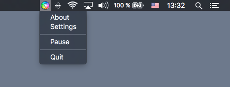
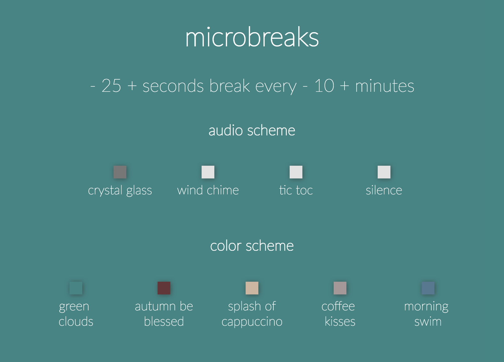

Jan Hovancik
software developer - guitar player - poetry lover
·

stretchly
break time reminder app
stretchly is cross-platform open source app that reminds you to take breaks when working with computer.

It runs in your tray and shows reminder window every 10 minutes, that is open for 20 seconds, contaning idea for microbreak.
You can pause/resume reminding of breaks. On Windows and macOS, you can set app to start at login.

Microbreaks can be customized:
- you can set duration and interval of break
- you can choose from different color schemes
- you can pick a sound to be played at the end of the break

·
·
If you like it, consider supporting it via flattr.
·
·
Another way to support it is to like it at AlternativeTo and on softpedia 1, 2 or anywhere else.
·
Sounds used in this application are listed here.
- crystal glass by mlteenie, available under the Attribution License.
- wind chime by GnoteSoundz, available under the Creative Commons 0 License.
- tic toc by magundah14, available under the Creative Commons 0 License.
- silence by parcodeisuoni, available under the Attribution License.
·